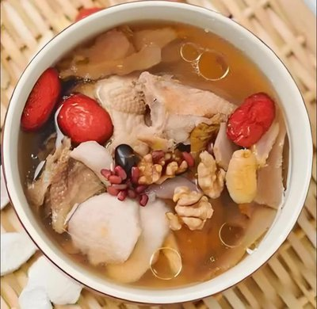

菜品介绍
老火靓汤是粤菜中的养生精髓，以其长时间的慢火熬煮、食材的营养充分释放而闻名。这道汤品不仅味道鲜美，更注重药食同源的理念，根据不同季节和体质需求搭配不同食材，达到滋补养生的效果。
"老火"指的是长时间的慢火熬煮，"靓汤"则是指汤品色香味俱全。正宗的老火靓汤需要熬制3-4小时，让食材中的营养成分充分溶解到汤中，形成浓郁醇厚的口感。
烹饪精髓
老火靓汤的烹饪精髓在于"慢火细熬"。将各种食材放入锅中，先用大火煮沸，然后转为小火慢慢熬煮数小时。 这种方法能够让食材中的营养成分充分释放到汤中，同时保持汤品清澈不浑浊，味道浓郁鲜美。
历史背景
老火靓汤源自广东，有着悠久的历史，与岭南地区湿热的气候密切相关。广东人通过喝汤来调理身体，应对湿热气候带来的不适。
在广东饮食文化中，"宁可食无菜，不可食无汤"的说法体现了汤品的重要性。老火靓汤不仅是日常饮食的一部分，更是家庭关爱和健康的象征。
制作步骤
1选材与准备
根据季节和体质需求选择主料（如猪骨、鸡肉、鱼肉等）和配料（如中药材、蔬菜、干果等）。肉类需先焯水去血沫。
2食材处理
将主料洗净切块，配料根据需要进行浸泡或简单处理。中药材需提前清洗，蔬菜类去皮切块。
3煲汤
将处理好的食材放入汤锅中，加入足量清水（一般是食材的2-3倍）。大火煮沸后撇去浮沫，转为小火慢熬3-4小时。
4调味
汤熬好后，根据个人口味加入适量盐调味。注意盐要在最后加，过早加盐会影响蛋白质的溶解和汤的鲜味。
5出锅
将汤盛入汤碗，可根据需要撒上少许香菜或葱花点缀。老火靓汤注重喝汤，食材通常作为次要。

食材清单
主料（以猪骨汤为例）
- 猪骨 500g
配料
- 胡萝卜 1根
- 玉米 1根
- 淮山 适量
- 枸杞 适量
- 红枣 5-6颗
调味料
- 姜片 3-4片
- 盐 适量
营养信息
* 营养信息为每100克估算值，实际数值可能因食材和烹饪方式有所不同
烹饪技巧
- 肉类食材一定要先焯水，去除血水和杂质，这样汤才会清澈
- 水量要一次加足，中途尽量不要加水，以免影响汤的浓度和风味
- 火候要控制好，煮沸后一定要转为小火慢熬
- 盐要最后放，过早放盐会使蛋白质凝固，影响汤的鲜味
- 根据季节和体质选择不同的食材搭配，达到不同的养生效果